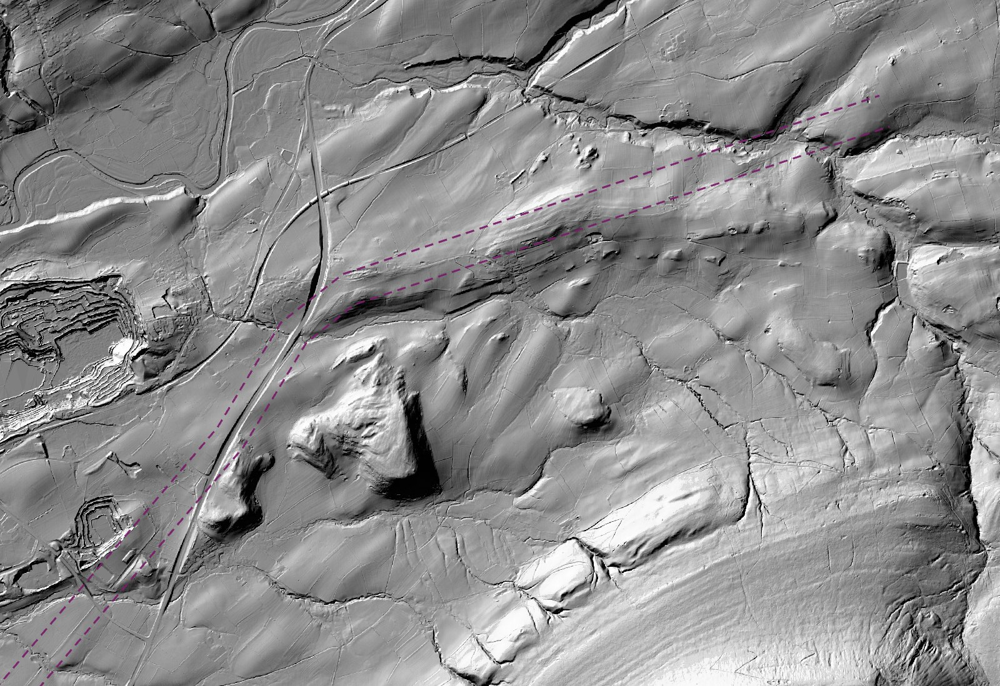

How Roman is your road?
Nearly two thousand years on, some of Britain's main roads still run where Roman surveyors set them out. Here is how much of each county's A-road network follows a Roman line, and where you can still see the old road in the ground.
Roman surveyors laid out long, straight alignments between forts and towns, and some of those lines never fell out of use. Watling Street became the A5. Ermine Street lives on in the A10 and the A1198. The Fosse Way is still the A429 across the Cotswolds and the A46 into Lincoln.
But how much of the modern network really follows them? To find out, I laid the new Itiner-e atlas of Roman roads, published in 2025, over every A-road in Great Britain in OpenStreetMap: about 46.7 thousand kilometres of road. Then I measured how much of each county's A-road length runs along a Roman line.
Check your county
Pick a county or click the map. Purple lines are the Roman roads; green lines are the stretches of today's A-roads that run along them. Switch on the lidar layer and zoom in to see the ground surface with trees and buildings stripped away.
Lidar: Environment Agency composite 1 m DTM hillshade, England only. It appears from zoom level 13; tiles can take a few seconds to draw.
Watling Street still leads
Measured in kilometres, no road is more Roman than the A5: 135 km of it sits on Watling Street, the road from London to Wroxeter. The rest of the A5 continues to Holyhead on Thomas Telford's nineteenth-century line. Next come the A46 on the Fosse Way, the A38, which follows Ryknild Street and the road south from Gloucester, and the A66 over Stainmore. The roads with the highest share are shorter ones: in Cambridgeshire the A1198 is Ermine Street for three quarters of its length.
| Road | A-road km | On a Roman line, km | Share |
|---|---|---|---|
| A5 | 384 | 135 | 35% |
| A46 | 291 | 63 | 22% |
| A38 | 452 | 56 | 12% |
| A66 | 175 | 55 | 31% |
| A6 | 429 | 54 | 13% |
| A15 | 153 | 54 | 35% |
| A429 | 113 | 50 | 44% |
| A2 | 115 | 42 | 36% |
| A37 | 92 | 41 | 45% |
| A11 | 98 | 39 | 40% |
| A40 | 418 | 37 | 9% |
| A702 | 133 | 37 | 28% |
Every county
Gloucestershire leads at 17.6%, followed by South Glamorgan, where the A48 follows the Roman road west from Cardiff, then Cambridgeshire and Hertfordshire, which Ermine Street and Watling Street cross on their way north from London. England as a whole comes to 6.5% and Wales to 4.8%. Scotland manages 0.7%: the Romans held most of it only briefly, and their roads there led to forts that were soon given up. Of the 87 areas, 27 have no A-road on a Roman line at all; all but the Isle of Wight are in Scotland.
Click a column heading to sort.
Near Clitheroe: the road you can still see
Lancashire comes out at 4.0%, below the English average. Most of that is the A6 north of Preston, on the Roman road to Lancaster. The A59 is a surprise: it follows a Roman line for about 1.5 km in Lancashire, near Worston, where it sits right on the road from Ribchester to Ilkley, and for about 16 km in North Yorkshire.
East of Worston the Roman road leaves the modern one and climbs along the north side of Pendle Hill, past Downham towards Rimington. No modern road follows it there, but the ground remembers it. On the Environment Agency's lidar, which strips away trees and buildings, its raised bank shows as a long straight ridge across the fields.

The Roman Roads Research Association's gazetteer entry for this road, by David Ratledge, traces it field by field. Use the buttons beside the map to fly to Downham and three other places where the agger is clear on lidar.
A wrinkle in the data
On a first pass, the Roman roads in Itiner-e sat about 100 metres east of the modern roads that are known to follow them, such as the A15 north of Lincoln and the A429. That is the size and direction of the gap between Britain's old OSGB36 map grid and the GPS system used by OpenStreetMap. Read as OSGB36 coordinates, the lines fall into place: the median gap between the A429 and the Fosse Way drops from 106 metres to 8. On the lidar they then sit on the surviving banks, as at Downham. All the figures here use the corrected lines.
How this was measured
- Roman roads: Itiner-e, static version 2024 (de Soto and others, 2025), 1,398 road sections in Britain, corrected from OSGB36 to WGS84 as described above. Every British section in Itiner-e is marked "conjectured" or "hypothetical"; leaving out the hypothetical ones barely changes the results.
- A-roads: every OpenStreetMap way tagged motorway, trunk or primary with an A-road number, including A(M) roads, downloaded on 26 October 2026. Dual carriageways are mapped as two one-way roads, so one-way roads count at half their length.
- Matching: each A-road is cut into pieces of about 20 metres. A piece counts as Roman if it lies within 40 metres of an Itiner-e road and runs in the same direction, within 20 degrees, so roads that merely cross a Roman road are not counted. All lengths are measured on the British National Grid.
- Counties: ceremonial counties in England, preserved counties in Wales and council areas in Scotland, built from ONS local authority boundaries.
- Limits: Itiner-e maps the main Roman routes, not every local road, and many routes are conjectured. A modern road can also run close to a Roman one without being its successor.
| Distance allowed | Great Britain | Roman km | Top county | Lancashire |
|---|---|---|---|---|
| 20 m | 3.6% | 1,702 | Gloucestershire | 2.5% |
| 40 m | 5.0% | 2,346 | Gloucestershire | 4.0% |
| 80 m | 5.9% | 2,766 | Gloucestershire | 5.0% |
| 150 m | 6.6% | 3,073 | Gloucestershire | 5.8% |
The overall share depends on how close a road must be to count, but the ranking hardly moves.
Sources
- de Soto, P., Pažout, A., Brughmans, T. and others (2025). Itiner-e: a high-resolution dataset of roads of the Roman Empire. Scientific Data. Data: Itiner-e static version 2024, CC BY 4.0.
- Road data © OpenStreetMap contributors, Open Database Licence.
- Boundaries: Office for National Statistics, via onsvisual/uk-topojson. Contains OS data © Crown copyright and database right. Open Government Licence.
- Lidar: Environment Agency, LIDAR Composite DTM 1 m hillshade, Open Government Licence.
- Roman Roads Research Association, romanroads.org: gazetteer, lidar guides and the road-by-road story.
- Data and code for this post: github.com/Tristan-Hotham/how-roman-is-your-road.
- AI use: I wrote this post with drafting, data and coding help from Claude (Anthropic).